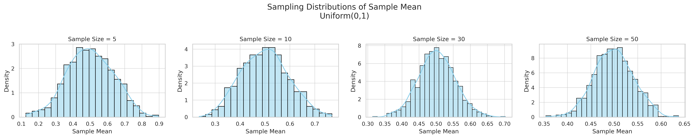
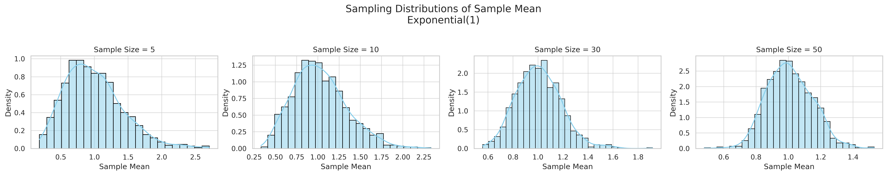
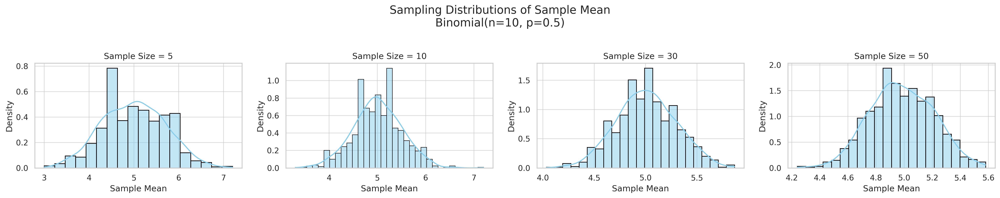

Problem 1: Exploring the Central Limit Theorem through Simulations
Motivation
The Central Limit Theorem (CLT) states that the sampling distribution of the sample mean tends toward a normal distribution as the sample size increases, regardless of the original population distribution. This theorem is a foundational concept in statistics and plays a crucial role in fields such as quality control, finance, and medical research.
Theory
We test the CLT using three different types of population distributions:
- Uniform Distribution: All values within a range are equally likely.
- Exponential Distribution: Positively skewed, often used to model waiting times.
- Binomial Distribution: Discrete, models the number of successes in fixed trials.
Sampling Process:
- Randomly draw samples of various sizes (n = 5, 10, 30, 50) from each population.
- Calculate the sample mean for each sample.
- Repeat this sampling process 1,000 times to create the sampling distribution of the mean.
Python Simulation Overview
We used Python with the following libraries:
NumPyfor generating random dataMatplotlibandSeabornfor visualization
Simulation Logic:
- Generate large population datasets for each distribution type.
- Draw 1000 samples for each sample size (5, 10, 30, 50).
- Plot the distribution of the sample means.
- Observe the convergence toward a normal distribution.
Visual Results
Here are histograms of sample means for each distribution and each sample size:
1. Uniform Distribution (0, 1)
- As the sample size increases, the distribution of sample means becomes more bell-shaped.

2. Exponential Distribution (λ = 1)
- Initially skewed, but larger samples result in near-normal distributions.

3. Binomial Distribution (n=10, p=0.5)
- Even though discrete, the sample means tend to normality with large samples.

Results & Discussion
| Sample Size | Shape of Sampling Distribution | Notes |
|---|---|---|
| n = 5 | Reflects skew/symmetry of population | CLT not strongly visible |
| n = 10 | Beginning to normalize | Some skew still present |
| n = 30 | Mostly normal | CLT clearly in effect |
| n = 50 | Nearly perfect bell-curve | Strong evidence of CLT |
-
CLT works even for non-normal populations, but the rate of convergence depends on:
-
The original distribution shape
- The population variance
Real-World Applications
- Quality Control: Detect anomalies in manufacturing using sample means.
- Finance: Estimate portfolio returns and model economic indicators.
- Medical Research: Make inferences from clinical trial samples to general populations.
Conclusion
This simulation provides a visual and intuitive understanding of the Central Limit Theorem. Key takeaways:
- Sample size matters: Larger samples lead to better approximations of normality.
- Original distribution shape and variance affect convergence.
- CLT justifies many statistical methods like confidence intervals and hypothesis testing.
Future Exploration:
- Try other distributions (e.g., Cauchy, Pareto).
- Analyze the role of standard deviation in convergence.
- Extend to confidence interval estimations using CLT.